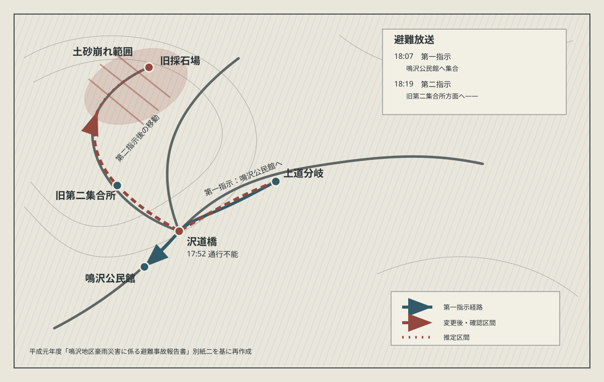
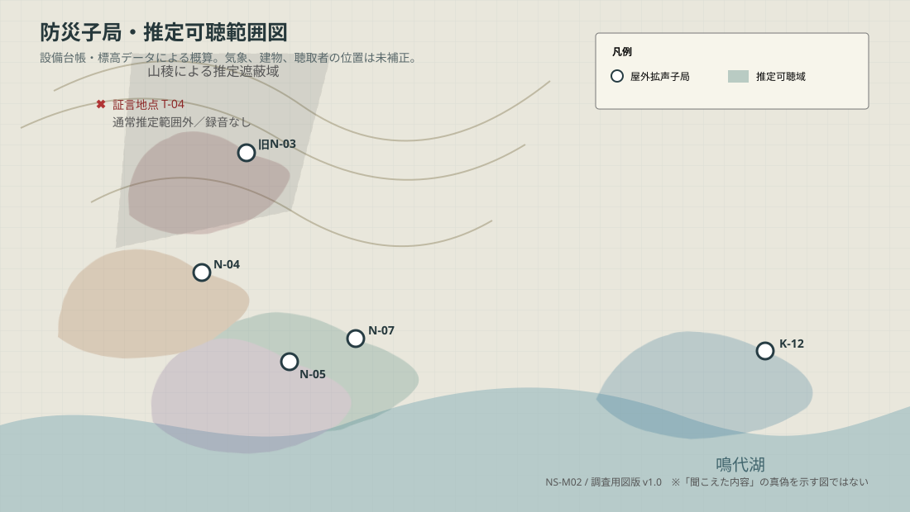
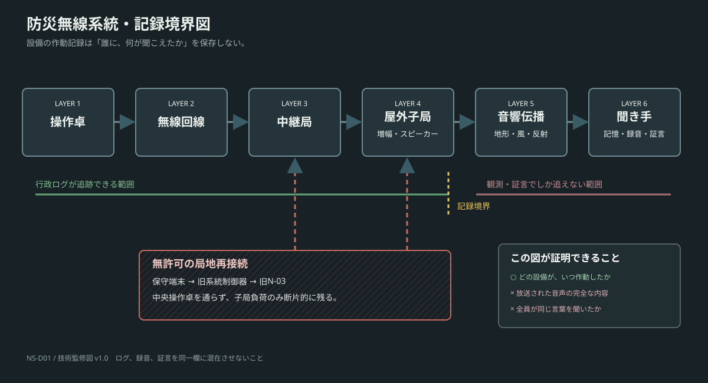
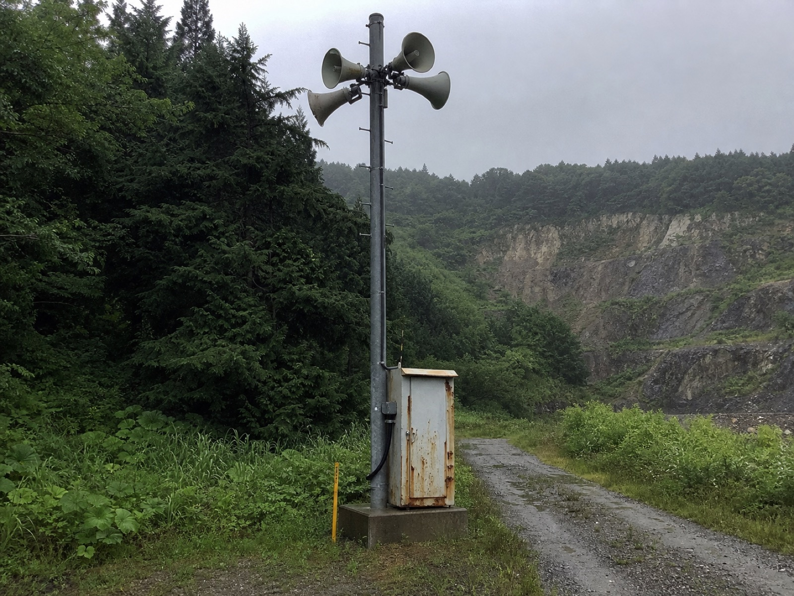
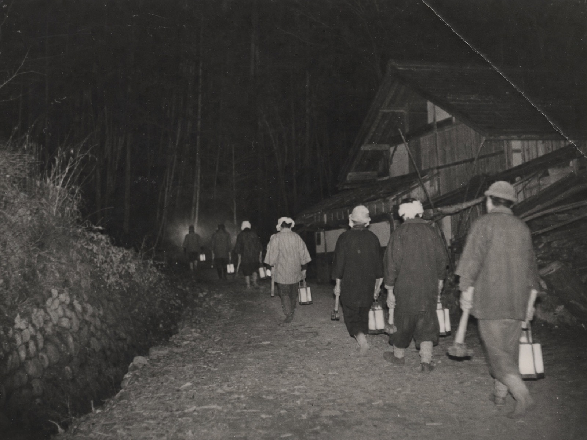

INVESTIGATION ARCHIVE / 2026
記録にない放送が、
あなたの名前を呼ぶ。
事件は解ける。怪異は解けない。地方紙記者が、聞き手ごとに内容の変わる防災無線と三十七年前の避難事故を追う、約九万字の考察型長編ホラー。
最重要原則「設備が作動した事実」と「人が聞いた内容」を分離する。
物語の起点
市危機管理課職員・相原紗季が、存在しない放送を録音した翌日に失踪する。弟の水城遼が同じ録音を聞くと、姉ではなく自分の名前が呼ばれる。
残す恐怖
声は誰のものか。放送は失踪の原因か予告か。資料を読む行為は、新たな「聴取」になるのか。
LOCATION FILE
鳴代市 なるしろし
確定設定鳴代湖
旧避難路 · · · · ·
旧鳴沢地区
古い集落。夏の特定夜に鐘や拍子木を鳴らす家が残る。回線と商用電源を撤去された子局が一基存在。
中心市街
市役所、防災操作卓、資料館、警察署、北嶺日報支局が集中。公的記録が集まり、同時に欠落する場所。
湖東台
転入者の多い造成地。旧来の鳴り物を騒音と認識する。近年の失踪報告が相対的に多い。
共同体は一枚岩ではない
旧住民事故の責任・家族の記憶・呼名への恐れ
新住民資産価値・風評・孤立回避
行政設備管理責任・合併前記録の不備
観光祭礼の由来が近年再編集された事実
PERSONNEL
人物ファイル
カードを選択して詳細表示INCIDENT LOG
二つの事件
人間側は解明「呼名に応ぜず」
夜回り規則、欠けた子守歌、名を呼ぶ古写真。完成された伝説は存在しない。
鳴沢避難事故
豪雨時、有線放送の指示変更により住民が旧採石場側へ向かい土砂崩れに遭う。公式七名。資料上は八人目が揺らぐ。
祭礼「声送り」の再編集
呼名、夜回り、鳴り物が鎮魂行事として観光向けにまとめられる。
未登録放送と失踪
相原紗季が失踪。柏木と久世は防止目的で子局を無許可運用し、旧避難路に沿う音の列を作る。
点検坑で発見
遼が子局の負荷順から経路を復元し、紗季を発見。不正は解けるが、個別の声は説明されない。
EVIDENCE INDEX
資料・証拠
信頼できる軸と疑う軸を分離THEORY MATRIX
三つの仮説
複合可能| 証拠 | A 土地 | B 人為 | C 記録 |
|---|
IN-STORY DOCUMENTS
作中資料・完成稿
本文へそのまま挿入可能12完成資料3章をまたぐ相互参照1共通する第三の音
VISUAL ARCHIVE SYSTEM
視覚資料設計
証拠として機能するデザイン原則汚れ、訂正、欠落には、必ず作中の発生理由を持たせる。









旧鳴沢町
再生上質紙、和文タイプ、丸形公印、二穴綴じ。別紙三の綴じ穴を物理的欠落として残す。
祭礼復元調査
大学ノート、青ボールペン、カセットラベル。清書と原話の差を同時に見せる。
鳴代市記録
白色帳票、等幅ログ、電子署名。怪異らしさではなく実務の不完全さを描く。
制作状況
- 地図・技術図 7点
- 作中資料閲覧室（全12資料）
- 年代別紙質テクスチャ 3点
- 作中記録写真 2点
STRUCTURE
全体構成
合計 90,000字SOUND DIRECTION
聞こえる恐怖、消える音
音量ではなく欠落を描くWRITING CONTROL
執筆規則
チェック状態は端末に保存整合性チェック
採用しない方向
PLOT DEVELOPMENT ARCHIVE
詳細プロット・会議記録
24会議 × 90分24プロット会議
2,160総会議時間・分
8物語区分
90,000想定総字数
SCENE BREAKDOWN